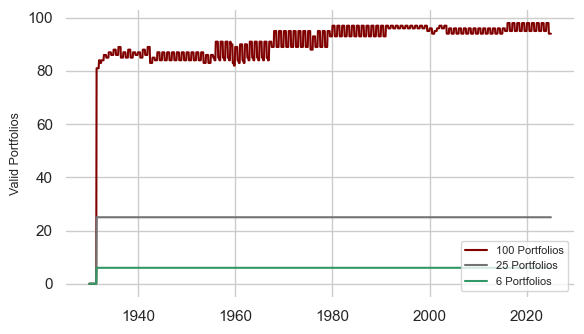
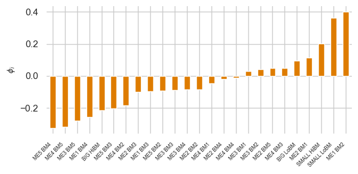
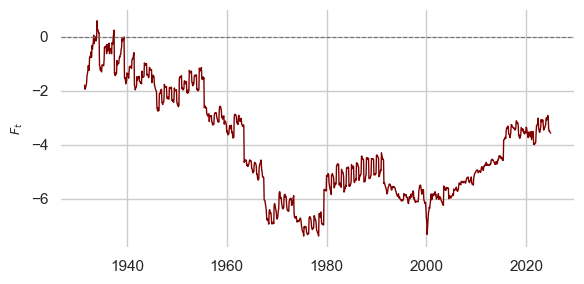
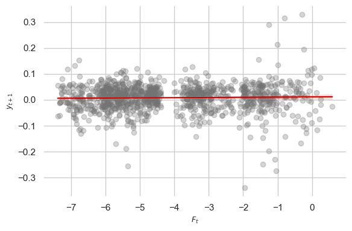

Kelly & Pruitt (2013): Summary Statistics and Replication Walkthrough#
This notebook provides a guided tour of the data and methodology used to replicate Table 1 of:
Kelly, B. and Pruitt, S. (2013), “Market Expectations in the Cross-Section of Present Values.” The Journal of Finance, 68: 1721-1756.
The core insight is that a single factor extracted from the cross-section of book-to-market (BM) ratios can forecast aggregate market returns. The extraction uses a three-pass regression filter (also known as partial least squares / PLS), which is designed to handle large panels of predictors even when the time series is short.
We walk through:
Data Ingestion & Cleaning — How we process Fama-French portfolio data
Summary Statistics — Descriptive statistics for BM ratios and market returns
Data Sparsity — Availability of cross-sectional predictors over time
The Three-Pass Regression Filter — Visualizing each intermediate stage
Table 1 Results — Comparing our replication to the published values
import pandas as pd
import numpy as np
from IPython.display import Image, display, Markdown
from pathlib import Path
# Import our custom modules
import load_data
import regression_tools as rt
from settings import config
OUTPUT_DIR = Path(config("OUTPUT_DIR"))
START_TRAIN_DATE = config("START_TRAIN_DATE")
START_TEST_DATE = config("START_TEST_DATE")
END_TEST_DATE = config("END_TEST_DATE")
# Load all cleaned datasets
data = load_data.clean_kelly_pruitt_data(load_from_cache=True)
print(f"Loaded {len(data)} datasets: {list(data.keys())}")
Loaded 7 datasets: ['Market_Returns', '6_Portfolios_2x3_Returns', '6_Portfolios_2x3_BM', '25_Portfolios_5x5_Returns', '25_Portfolios_5x5_BM', '100_Portfolios_10x10_Returns', '100_Portfolios_10x10_BM']
1. Data Ingestion & Cleaning#
We use data from Kenneth French’s data library rather than constructing portfolios directly from CRSP/Compustat. This provides pre-formed portfolios sorted on Size and Book-to-Market going back to 1926, which is critical since the paper’s training sample begins in 1930.
The raw data contains missing value indicators (-99.99, -999, etc.) which we standardize to NaN. We then construct monthly log book-to-market ratios following Vuolteenaho’s methodology:
where book equity (BE) is updated annually and market equity (ME) is observed monthly.
# Examine the 25 Portfolios (5x5 Size x BM) — our primary replication dataset
bm_25 = data["25_Portfolios_5x5_BM"]
print(f"25 Portfolios BM shape: {bm_25.shape}")
print(f"Date range: {bm_25.index.min().strftime('%Y-%m')} to {bm_25.index.max().strftime('%Y-%m')}")
print(f"Number of portfolios: {bm_25.shape[1]}")
print(f"\nFirst 5 rows:")
display(bm_25.head())
25 Portfolios BM shape: (1140, 25)
Date range: 1930-01 to 2024-12
Number of portfolios: 25
First 5 rows:
| SMALL LoBM | ME1 BM2 | ME1 BM3 | ME1 BM4 | SMALL HiBM | ME2 BM1 | ME2 BM2 | ME2 BM3 | ME2 BM4 | ME2 BM5 | ... | ME4 BM1 | ME4 BM2 | ME4 BM3 | ME4 BM4 | ME4 BM5 | BIG LoBM | ME5 BM2 | ME5 BM3 | ME5 BM4 | BIG HiBM | |
|---|---|---|---|---|---|---|---|---|---|---|---|---|---|---|---|---|---|---|---|---|---|
| Date | |||||||||||||||||||||
| 1930-01-01 | NaN | NaN | NaN | NaN | NaN | NaN | NaN | NaN | NaN | NaN | ... | NaN | NaN | NaN | NaN | NaN | NaN | NaN | NaN | NaN | NaN |
| 1930-02-01 | NaN | NaN | NaN | NaN | NaN | NaN | NaN | NaN | NaN | NaN | ... | NaN | NaN | NaN | NaN | NaN | NaN | NaN | NaN | NaN | NaN |
| 1930-03-01 | NaN | NaN | NaN | NaN | NaN | NaN | NaN | NaN | NaN | NaN | ... | NaN | NaN | NaN | NaN | NaN | NaN | NaN | NaN | NaN | NaN |
| 1930-04-01 | NaN | NaN | NaN | NaN | NaN | NaN | NaN | NaN | NaN | NaN | ... | NaN | NaN | NaN | NaN | NaN | NaN | NaN | NaN | NaN | NaN |
| 1930-05-01 | NaN | NaN | NaN | NaN | NaN | NaN | NaN | NaN | NaN | NaN | ... | NaN | NaN | NaN | NaN | NaN | NaN | NaN | NaN | NaN | NaN |
5 rows × 25 columns
# Market returns — our target variable
mkt = data["Market_Returns"]
print(f"Market Returns shape: {mkt.shape}")
print(f"Date range: {mkt.index.min().strftime('%Y-%m')} to {mkt.index.max().strftime('%Y-%m')}")
print(f"Columns: {list(mkt.columns)}")
print(f"\nFirst 5 rows:")
display(mkt.head())
Market Returns shape: (1140, 4)
Date range: 1930-01 to 2024-12
Columns: ['Mkt', 'Log_Mkt', 'Mkt-RF', 'RF']
First 5 rows:
| Mkt | Log_Mkt | Mkt-RF | RF | |
|---|---|---|---|---|
| Date | ||||
| 1930-01-01 | 5.75 | 0.055908 | 5.61 | 0.14 |
| 1930-02-01 | 2.80 | 0.027615 | 2.50 | 0.30 |
| 1930-03-01 | 7.44 | 0.071762 | 7.09 | 0.35 |
| 1930-04-01 | -1.84 | -0.018571 | -2.05 | 0.21 |
| 1930-05-01 | -1.40 | -0.014099 | -1.66 | 0.26 |
2. Summary Statistics#
Below we compute descriptive statistics for the log BM ratios of the 25 portfolios and the log market return over the sample period used for replication (1930–2010).
# Restrict to the replication sample period
v_df = bm_25.loc[START_TRAIN_DATE:END_TEST_DATE]
y_1m = mkt['Log_Mkt'].loc[START_TRAIN_DATE:END_TEST_DATE]
print(f"Sample period: {v_df.index.min().strftime('%Y-%m')} to {v_df.index.max().strftime('%Y-%m')}")
print(f"Number of monthly observations: {len(v_df)}")
print(f"\n--- Log Book-to-Market Ratios (25 Portfolios) ---")
summary = v_df.describe().T[['mean', 'std', 'min', '25%', '50%', '75%', 'max']]
display(summary.style.format('{:.4f}'))
Sample period: 1930-01 to 2010-12
Number of monthly observations: 972
--- Log Book-to-Market Ratios (25 Portfolios) ---
| mean | std | min | 25% | 50% | 75% | max | |
|---|---|---|---|---|---|---|---|
| SMALL LoBM | -7.1225 | 3.1164 | -11.1870 | -9.5138 | -8.5446 | -5.1959 | 2.4288 |
| ME1 BM2 | -5.2121 | 2.4798 | -9.6086 | -7.5253 | -5.4371 | -2.9287 | 0.1205 |
| ME1 BM3 | -4.2593 | 2.2155 | -8.0549 | -6.1750 | -4.2443 | -2.8095 | 1.2058 |
| ME1 BM4 | -2.9968 | 1.9918 | -6.5997 | -4.7247 | -2.7600 | -1.6815 | 1.8881 |
| SMALL HiBM | -1.4685 | 2.0233 | -4.6608 | -3.1608 | -1.5776 | 0.0369 | 3.3623 |
| ME2 BM1 | -5.1693 | 2.6650 | -8.9115 | -7.6947 | -5.4075 | -3.2149 | 2.0465 |
| ME2 BM2 | -3.8530 | 2.1765 | -7.0683 | -5.9845 | -3.9963 | -2.1520 | 1.7511 |
| ME2 BM3 | -3.2305 | 2.0188 | -6.5296 | -5.2972 | -2.8998 | -1.7746 | 1.4129 |
| ME2 BM4 | -2.4647 | 1.9121 | -5.8717 | -4.0251 | -2.3457 | -1.1363 | 2.0748 |
| ME2 BM5 | -1.3422 | 1.6936 | -4.3707 | -2.8560 | -1.1752 | -0.0471 | 2.7465 |
| ME3 BM1 | -4.5319 | 2.2595 | -8.1315 | -6.7134 | -4.5493 | -2.7671 | 0.6780 |
| ME3 BM2 | -3.4057 | 2.0685 | -6.6540 | -5.4026 | -3.4496 | -1.7100 | 1.1729 |
| ME3 BM3 | -2.7606 | 1.8726 | -6.2507 | -4.5006 | -2.6471 | -1.2660 | 1.3716 |
| ME3 BM4 | -2.3256 | 1.8945 | -5.6962 | -4.1643 | -2.1399 | -0.9566 | 2.1593 |
| ME3 BM5 | -1.5689 | 1.4570 | -4.3376 | -3.0505 | -1.3310 | -0.5980 | 2.6489 |
| ME4 BM1 | -3.9582 | 1.9041 | -7.3368 | -5.5750 | -3.8578 | -2.2805 | 0.1895 |
| ME4 BM2 | -2.9957 | 1.8493 | -6.5125 | -4.6585 | -2.8099 | -1.6612 | 0.8773 |
| ME4 BM3 | -2.6628 | 2.0080 | -6.0253 | -4.4868 | -2.6498 | -1.0990 | 1.6559 |
| ME4 BM4 | -2.1654 | 1.9831 | -5.3319 | -4.3333 | -1.8407 | -0.4467 | 1.6794 |
| ME4 BM5 | -1.8780 | 1.3962 | -4.5241 | -3.1179 | -1.8054 | -0.8312 | 2.9061 |
| BIG LoBM | -3.4723 | 2.0053 | -7.5606 | -5.1500 | -3.1977 | -1.6548 | -0.1759 |
| ME5 BM2 | -2.9210 | 2.0348 | -6.9424 | -4.2277 | -2.6352 | -1.2901 | 1.0540 |
| ME5 BM3 | -2.4571 | 1.6474 | -5.4731 | -3.8134 | -2.4652 | -1.6701 | 2.4091 |
| ME5 BM4 | -2.3181 | 1.6118 | -5.6255 | -3.8510 | -2.1239 | -1.0701 | 2.7700 |
| BIG HiBM | -2.8812 | 1.1103 | -4.9414 | -3.6258 | -3.0644 | -2.1896 | 1.2707 |
# Market return statistics
print("--- Log Market Return ---")
mkt_stats = y_1m.describe()[['mean', 'std', 'min', '25%', '50%', '75%', 'max']]
mkt_summary = pd.DataFrame(mkt_stats).T
mkt_summary.index = ['Log Market Return']
display(mkt_summary.style.format('{:.4f}'))
print(f"\nAnnualized mean return: {y_1m.mean() * 12:.4f}")
print(f"Annualized volatility: {y_1m.std() * np.sqrt(12):.4f}")
print(f"Sharpe ratio (approx): {(y_1m.mean() * 12) / (y_1m.std() * np.sqrt(12)):.4f}")
--- Log Market Return ---
| mean | std | min | 25% | 50% | 75% | max | |
|---|---|---|---|---|---|---|---|
| Log Market Return | 0.0075 | 0.0545 | -0.3384 | -0.0185 | 0.0124 | 0.0391 | 0.3287 |
Annualized mean return: 0.0899
Annualized volatility: 0.1887
Sharpe ratio (approx): 0.4766
3. Analyzing Data Sparsity#
Not all portfolios have data going back to 1926. The 6-portfolio set (2×3) has near-complete coverage, but the 100-portfolio set (10×10) is sparse in early decades because many Size × BM bins lack sufficient firms. This motivates the PLS approach — it gracefully handles unbalanced panels.
# Count valid (non-NaN) portfolios at each date
bm_6 = data["6_Portfolios_2x3_BM"]
bm_100 = data["100_Portfolios_10x10_BM"]
sparsity = pd.DataFrame({
'6 Portfolios': bm_6.count(axis=1),
'25 Portfolios': bm_25.count(axis=1),
'100 Portfolios': bm_100.count(axis=1)
})
print("Portfolio availability at key dates:")
key_dates = ['1930-01-01', '1950-01-01', '1970-01-01', '1990-01-01', '2010-01-01']
for d in key_dates:
nearest = sparsity.index[sparsity.index >= pd.Timestamp(d)][0]
row = sparsity.loc[nearest]
print(f" {nearest.strftime('%Y-%m')}: 6-port={row['6 Portfolios']:.0f}, "
f"25-port={row['25 Portfolios']:.0f}, 100-port={row['100 Portfolios']:.0f}")
Portfolio availability at key dates:
1930-01: 6-port=0, 25-port=0, 100-port=0
1950-01: 6-port=6, 25-port=25, 100-port=87
1970-01: 6-port=6, 25-port=25, 100-port=95
1990-01: 6-port=6, 25-port=25, 100-port=97
2010-01: 6-port=6, 25-port=25, 100-port=96
display(Image(filename=OUTPUT_DIR / "data_sparsity.png"))

4. The Three-Pass Regression Filter#
The core methodology extracts a single predictive factor \(F_t\) from the cross-section of BM ratios. We demonstrate each stage using the 25 Portfolios with a 1-month forecast horizon (\(h=1\)).
Stage 1: Time-Series Regressions (Estimating Sensitivities)#
For each portfolio \(i\), we estimate its sensitivity to future market returns via a time-series regression:
The slope coefficient \(\phi_i\) measures how much portfolio \(i\)’s BM ratio moves with future market returns. Portfolios with larger \(|\phi_i|\) carry more predictive information.
# Run Stage 1 on the full sample
y_full = mkt['Log_Mkt']
common_idx = bm_25.index.intersection(y_full.index)
v_aligned = bm_25.loc[common_idx]
y_aligned = y_full.loc[common_idx]
phi = rt.first_stage_regressions(v_aligned, y_aligned, h=1)
print(f"Estimated sensitivities for {len(phi)} portfolios:")
print(f" Range: [{phi.min():.4f}, {phi.max():.4f}]")
print(f" Mean: {phi.mean():.4f}")
print(f" Std: {phi.std():.4f}")
print(f"\nTop 5 most sensitive portfolios:")
display(phi.sort_values(ascending=False).head().to_frame('phi'))
Estimated sensitivities for 25 portfolios:
Range: [-0.3234, 0.3987]
Mean: -0.0420
Std: 0.1867
Top 5 most sensitive portfolios:
| phi | |
|---|---|
| ME1 BM2 | 0.398695 |
| SMALL LoBM | 0.361601 |
| SMALL HiBM | 0.202698 |
| ME2 BM1 | 0.112671 |
| BIG LoBM | 0.095888 |
display(Image(filename=OUTPUT_DIR / "stage_1_sensitivities.png"))

Stage 2: Cross-Sectional Regressions (Extracting the Factor)#
At each time \(t\), we regress the cross-section of BM ratios onto the estimated sensitivities:
The slope \(F_t\) is our extracted latent factor — a single time series that aggregates the predictive content of all portfolios.
F_series = rt.second_stage_regressions(v_aligned, phi)
print(f"Extracted factor F_t: {len(F_series)} observations")
print(f" Date range: {F_series.index.min().strftime('%Y-%m')} to {F_series.index.max().strftime('%Y-%m')}")
print(f" Mean: {F_series.mean():.4f}")
print(f" Std: {F_series.std():.4f}")
print(f" Correlation with log market return: {F_series.corr(y_aligned.reindex(F_series.index)):.4f}")
Extracted factor F_t: 1122 observations
Date range: 1931-07 to 2024-12
Mean: -4.0974
Std: 1.9494
Correlation with log market return: 0.0241
display(Image(filename=OUTPUT_DIR / "stage_2_factor.png"))

Stage 3: Predictive Regression#
Finally, we regress future market returns on the lagged factor:
If \(F_t\) captures genuine predictive information, \(\beta\) should be statistically significant and the \(R^2\) should be meaningfully positive.
model = rt.third_stage_regression(F_series, y_aligned, h=1)
print("Stage 3 Predictive Regression Results:")
print(f" Intercept (beta_0): {model.params.iloc[0]:.6f}")
print(f" Slope (beta): {model.params.iloc[1]:.6f}")
print(f" In-sample R²: {model.rsquared:.4f} ({model.rsquared * 100:.2f}%)")
print(f" t-stat (slope): {model.tvalues.iloc[1]:.4f}")
print(f" p-value (slope): {model.pvalues.iloc[1]:.4f}")
print(f" N observations: {int(model.nobs)}")
Stage 3 Predictive Regression Results:
Intercept (beta_0): 0.011377
Slope (beta): 0.000712
In-sample R²: 0.0007 (0.07%)
t-stat (slope): 0.8927
p-value (slope): 0.3722
N observations: 1121
display(Image(filename=OUTPUT_DIR / "stage_3_predictive.png"))

5. Table 1 Replication Results#
Table 1 reports in-sample (IS) and out-of-sample (OOS) predictive \(R^2\) values across three portfolio granularities (6, 25, 100) and two forecast horizons (1-month, 1-year). The out-of-sample evaluation uses an expanding window — at each test date, the model is re-estimated using only data available up to that point.
We compare our replication against the published values:
# Load pre-computed Table 1 results (from replication.py pipeline)
try:
df_original = pd.read_csv(OUTPUT_DIR / "table_1_results_original.csv", index_col=0)
# Published values from the paper
paper_values = pd.DataFrame({
"1-Year IS": {"6 Portfolios": 7.72, "25 Portfolios": 13.50, "100 Portfolios": 18.05},
"1-Year OOS": {"6 Portfolios": 5.81, "25 Portfolios": 3.49, "100 Portfolios": 13.07},
"1-Month IS": {"6 Portfolios": 0.60, "25 Portfolios": 1.12, "100 Portfolios": 2.38},
"1-Month OOS": {"6 Portfolios": 0.65, "25 Portfolios": 0.77, "100 Portfolios": 0.93},
})
paper_values.index.name = "Portfolio Set"
print("=" * 70)
print("PUBLISHED VALUES (Kelly & Pruitt 2013, Table 1)")
print("=" * 70)
display(paper_values.style.format('{:.2f}'))
print("\n" + "=" * 70)
print("OUR REPLICATION (Train: 1930-1980, Test: 1980-2010)")
print("=" * 70)
display(df_original.style.format('{:.2f}'))
# Compute differences
diff = df_original - paper_values
print("\n" + "=" * 70)
print("DIFFERENCE (Replication - Published)")
print("=" * 70)
display(diff.style.format('{:+.2f}'))
except FileNotFoundError:
print("Table 1 results not yet computed. Run 'doit run_replication' first.")
print("(The out-of-sample expanding window computation takes ~20 minutes.)")
======================================================================
PUBLISHED VALUES (Kelly & Pruitt 2013, Table 1)
======================================================================
| 1-Year IS | 1-Year OOS | 1-Month IS | 1-Month OOS | |
|---|---|---|---|---|
| Portfolio Set | ||||
| 6 Portfolios | 7.72 | 5.81 | 0.60 | 0.65 |
| 25 Portfolios | 13.50 | 3.49 | 1.12 | 0.77 |
| 100 Portfolios | 18.05 | 13.07 | 2.38 | 0.93 |
======================================================================
OUR REPLICATION (Train: 1930-1980, Test: 1980-2010)
======================================================================
| 1-Year IS | 1-Year OOS | 1-Month IS | 1-Month OOS | |
|---|---|---|---|---|
| Portfolio Set | ||||
| 6 Portfolios | 1.08 | -6.66 | 0.15 | -0.32 |
| 25 Portfolios | 0.92 | -6.12 | 0.08 | -1.13 |
| 100 Portfolios | 2.14 | -6.81 | 0.31 | -1.09 |
======================================================================
DIFFERENCE (Replication - Published)
======================================================================
| 1-Year IS | 1-Year OOS | 1-Month IS | 1-Month OOS | |
|---|---|---|---|---|
| Portfolio Set | ||||
| 6 Portfolios | -6.64 | -12.47 | -0.45 | -0.97 |
| 25 Portfolios | -12.58 | -9.61 | -1.04 | -1.90 |
| 100 Portfolios | -15.91 | -19.88 | -2.07 | -2.02 |
# Modern period extension
try:
df_modern = pd.read_csv(OUTPUT_DIR / "table_1_results_modern.csv", index_col=0)
print("=" * 70)
print("REPRODUCTION WITH NEW DATA (Train: 1930-2010, Test: 2011-2024)")
print("=" * 70)
display(df_modern.style.format('{:.2f}'))
except FileNotFoundError:
print("Modern period results not yet computed.")
======================================================================
REPRODUCTION WITH NEW DATA (Train: 1930-2010, Test: 2011-2024)
======================================================================
| 1-Year IS | 1-Year OOS | 1-Month IS | 1-Month OOS | |
|---|---|---|---|---|
| Portfolio Set | ||||
| 6 Portfolios | 0.66 | -1.12 | 0.07 | -0.57 |
| 25 Portfolios | 0.92 | 3.50 | 0.07 | -0.12 |
| 100 Portfolios | 1.76 | -1.27 | 0.21 | -0.46 |